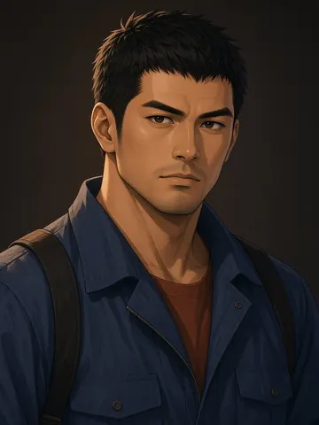
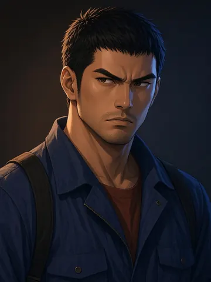
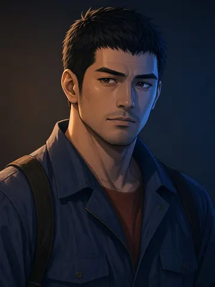

Lookout façade on the east boardwalk above the flower boat (not on Minato-sō’s already-wired south overlay), a detailed 船宿 interior, two C2BT battle rooms (stairs / quay flank), and Kaji’s portrait next to his sprite. Preview only until self-review.


